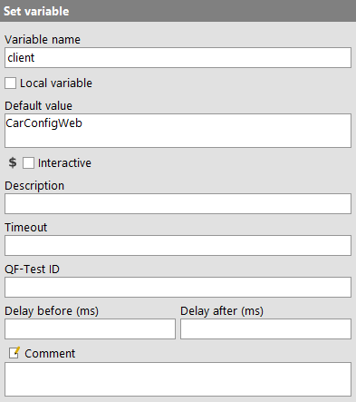
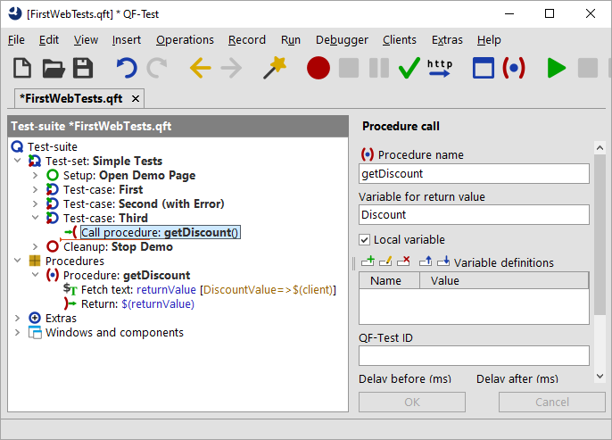

| Version 6.0.3 |
In addition to the methods you have already seen, variables can also be set as follows:
For information about the best place where to define a variable please refer to the next section.
You can insert a 'Set variable' node via the menu item »Insert«-»Miscellaneous«-»Set variable«. In its details you can specifiy whether the value should be bound as a local or a global variable.
The following figure shows the details of a 'Set variable' node. (You can find it
as the first node of the 'Setup' node.) It defines
a variable named client. It is a global variable as the 'Local variable' attribute
has not been checked.
|
|  | ||
|
| Figure 15.10: Details of the 'Set variable' node | ||
When you want to set a variable as the result of a procedure call you need to specify the variable name in the 'Variable for return value' attribute of the procedure call. Within the procedure itself you have to add a 'Return' node with the value to be returned as the last node to be executed.
The next figure shows a theoretical example of a procedure which returns a value.
The procedure fetches the discount value displayed in the
SUT and returns it to the calling test-case. There, the receiving variable
is named Discount and declared as a local variable.
|
|  | ||
|
| Figure 15.11: Procedure returning a value | ||
The 'Fetch text' node of above example is one of the QF-Test nodes directly setting a variable value. You need to specify the variable name in the attribute called accordingly. Again, you have the choice whether to make it local or global.
Quite a number of nodes have a 'Variable definitions' table where you may define variables local to a procedure or a test-case. If the respective node is part of a procedure the variable will be local to the procedure. Otherwise it will be local to the respective test-case. Variables bound to the test-suite node can be accessed from all nodes within the test-suite.
In debugging mode, all nodes you can bind a variable to will show up on the variable bindings table when entered.
You can enter variables in the command line via the parameter -variable.
For details please refer to the manual, chapter 'Command line arguments and exit codes'.
| Last update: 9/6/2022 Copyright © 2002-2022 Quality First Software GmbH |